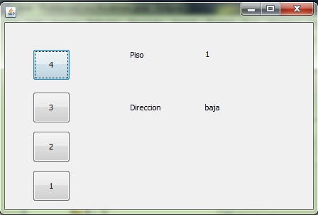
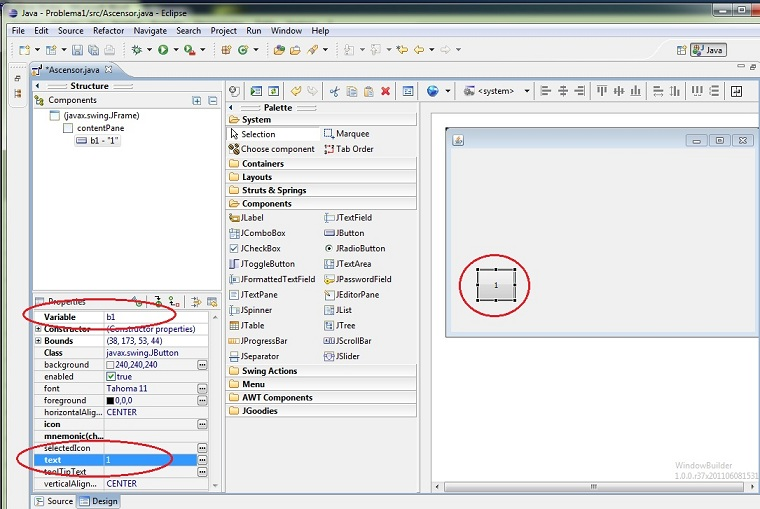
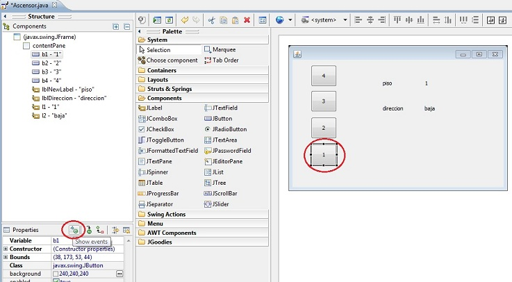
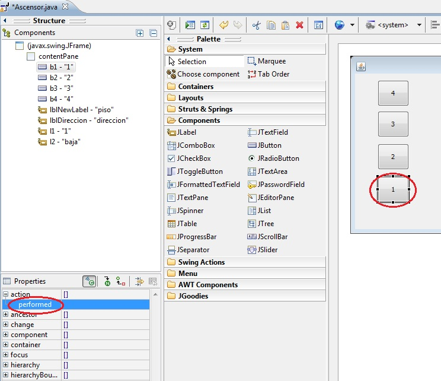
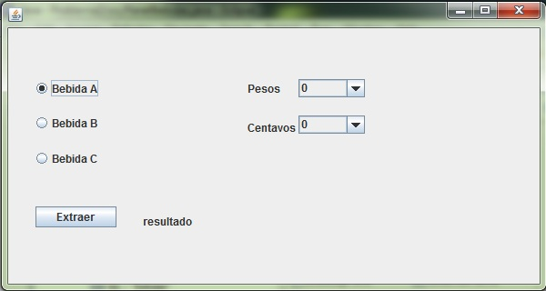
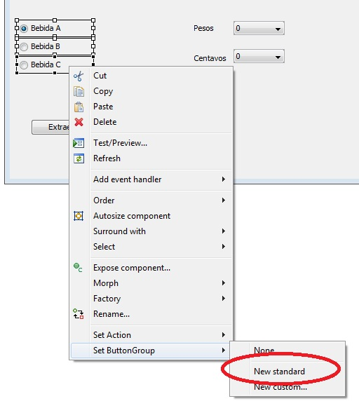

- Plug-in WindowBuilder problemas resueltos |
Desarrollaremos una serie de aplicaciones que requieran componentes visuales y utilizaremos el WindowBuilder para agilizar su desarrollo.
Desarrollar un programa que muestre el tablero de un ascensor:
El funcionamiento es el siguiente:
Inicialmente el ascensor está en el piso 1.
Por ejemplo: si se presiona el botón 3 se muestra en un JLabel el piso número 3 y en otra JLabel la dirección. La cadena "Sube", en caso de presionar un piso superior al actual. Mostramos la cadena "Baja" en el JLabel si se presiona un piso inferior. y si el piso donde se encuentra actualmente coincide con el presionado luego mostrar el mensaje "Piso actual".
Algunos consejos para crear la interfaz visual:
1 - Lo primero que debemos hacer cada vez que creamos un JFrame es definir el Layout a utilizar (normalmente utilizaremos "Absolute Layout", esto lo hacemos presionando el botón derecho del mouse dentro del JFrame y seleccionando la opción "Set Layout".
El tipo de layout a utilizar también se lo puede fijar seleccionando el objeto "contentPane"(este objeto es de la clase JPanel y todo JFrame lo contiene como fondo principal) y luego en la ventana de propiedades cambiamos la propiedad "Layot"
2 - Cuando creamos el primer JButton definimos el nombre del objeto cambiando la propiedad "Variable" y mediante la propiedad Text definimos el texto a mostrar (con el mouse dimensionamos el JButton):
3 - Los otros botones los podemos crear de la misma manera seleccionando un objeto de la clase JButton de la "Palette" o cuando tenemos que crear otros objetos semejantes podemos presionar el botón derecho del mouse sobre el objeto a duplicar y seguidamente en el menú contextual seleccionar la opción "Copy" y seguidamente la opción "Paste" con lo que tendremos otro objeto semejante.
Luego si deberemos definir un nombre para el objeto (propiedad "Variable") y la propiedad "text" para la etiqueta a mostrar:
4 - Los objetos que necesitemos consultar o modificar en tiempo de ejecución debemos definirlos como atributos de clase (también llamados campos de clase)
En este problema cuando se presione alguno de los cuatro botones debemos consultar el contendido de la label que indica el piso actual y la label que muestra la dirección será modificada por otro String.
Para definir un control visual como atributo de clase debemos seleccionarlo y presionar en la ventana de propiedades el botón "Convert local to field" (en nuetro problema definamos a estos dos objetos de la clase JLabel con el nombre l1 y l2):
5 - Para capturar el evento clic de un objeto de la clase JButton debemos seleccionarlo y presionar el botón "Show Events":
y seguidamente hacer doble-clic sobre el evento a implementar:
La solución a este problema es el siguiente:
import java.awt.EventQueue;
import javax.swing.JFrame;
import javax.swing.JPanel;
import javax.swing.border.EmptyBorder;
import javax.swing.JButton;
import javax.swing.JLabel;
import java.awt.event.ActionListener;
import java.awt.event.ActionEvent;
public class Ascensor extends JFrame {
private JPanel contentPane;
private JLabel l1;
private JLabel l2;
/**
* Launch the application.
*/
public static void main(String[] args) {
EventQueue.invokeLater(new Runnable() {
public void run() {
try {
Ascensor frame = new Ascensor();
frame.setVisible(true);
} catch (Exception e) {
e.printStackTrace();
}
}
});
}
/**
* Create the frame.
*/
public Ascensor() {
setDefaultCloseOperation(JFrame.EXIT_ON_CLOSE);
setBounds(100, 100, 450, 300);
contentPane = new JPanel();
contentPane.setBorder(new EmptyBorder(5, 5, 5, 5));
setContentPane(contentPane);
contentPane.setLayout(null);
JButton b1 = new JButton("1");
b1.addActionListener(new ActionListener() {
public void actionPerformed(ActionEvent e) {
int pisoactual=Integer.parseInt(l1.getText());
if (1<pisoactual)
l2.setText("Baja");
else
l2.setText("Piso actual");
l1.setText("1");
}
});
b1.setBounds(38, 173, 53, 44);
contentPane.add(b1);
JButton b2 = new JButton("2");
b2.addActionListener(new ActionListener() {
public void actionPerformed(ActionEvent e) {
int pisoactual=Integer.parseInt(l1.getText());
if (2<pisoactual)
l2.setText("Baja");
else
if (2>pisoactual)
l2.setText("Sube");
else
l2.setText("Piso actual");
l1.setText("2");
}
});
b2.setBounds(38, 118, 53, 44);
contentPane.add(b2);
JButton b3 = new JButton("3");
b3.addActionListener(new ActionListener() {
public void actionPerformed(ActionEvent e) {
int pisoactual=Integer.parseInt(l1.getText());
if (3<pisoactual)
l2.setText("Baja");
else
if (3>pisoactual)
l2.setText("Sube");
else
l2.setText("Piso actual");
l1.setText("3");
}
});
b3.setBounds(38, 63, 53, 44);
contentPane.add(b3);
JButton b4 = new JButton("4");
b4.addActionListener(new ActionListener() {
public void actionPerformed(ActionEvent e) {
int pisoactual=Integer.parseInt(l1.getText());
if (4>pisoactual)
l2.setText("Sube");
else
l2.setText("Piso actual");
l1.setText("4");
}
});
b4.setBounds(38, 11, 53, 44);
contentPane.add(b4);
JLabel lblNewLabel = new JLabel("piso");
lblNewLabel.setBounds(186, 41, 46, 14);
contentPane.add(lblNewLabel);
JLabel lblDireccion = new JLabel("direccion");
lblDireccion.setBounds(186, 93, 61, 14);
contentPane.add(lblDireccion);
l1 = new JLabel("1");
l1.setBounds(272, 41, 46, 14);
contentPane.add(l1);
l2 = new JLabel("baja");
l2.setBounds(272, 93, 92, 14);
contentPane.add(l2);
}
}
Cuando se presiona el botón 1 procedemos a extraer el contenido de la label 1 que almacena el valor del piso actual, como se presionó el primer botón preguntamos si 1 es menor al piso actual, en dicho caso mostramos en la label 2 el texto "Baja" en caso contrario significa que estamos actualmente en el piso 1 (cuando se presiona el botón 1 nunca puede decir el texto sube) Luego cambiamos la etiqueta de la label 1 con el valor "1" que es el nuevo piso:
b1.addActionListener(new ActionListener() {
public void actionPerformed(ActionEvent e) {
int pisoactual=Integer.parseInt(l1.getText());
if (1<pisoactual)
l2.setText("Baja");
else
l2.setText("Piso actual");
l1.setText("1");
}
});
El botón 4 es similar al botón 1 ya que mostraremos la etiqueta "Sube" o "Piso actual":
b4.addActionListener(new ActionListener() {
public void actionPerformed(ActionEvent e) {
int pisoactual=Integer.parseInt(l1.getText());
if (4>pisoactual)
l2.setText("Sube");
else
l2.setText("Piso actual");
l1.setText("4");
}
});
Si se presiona el botón del segundo piso debemos verificar si 2 es menor, mayor o igual al piso actual (igual para el botón del tercer piso):
b2.addActionListener(new ActionListener() {
public void actionPerformed(ActionEvent e) {
int pisoactual=Integer.parseInt(l1.getText());
if (2<pisoactual)
l2.setText("Baja");
else
if (2>pisoactual)
l2.setText("Sube");
else
l2.setText("Piso actual");
l1.setText("2");
}
});
Desarrollar un programa que muestre un panel para extracción de una bebida:
Por un lado disponer tres objetos de la clase JRadioButton (llamarlos radio1, radio2 y radio 3), configurar el primero para que aparezca seleccionado (propiedad "selected")
Disponer dos objetos de la clase JComboBox (llamarlos comboPesos y comboCentavos)
En el JComboBox pesos inicializar la propiedad model con los valores del 0 al 5 (hay que cargar un valor por cada línea en el diálogo que aparece)
En forma similar el segundo JComboBox cargamos los valores: 0,10,20,30 etc. hasta 90.
Se sabe que :
Bebida A tiene un costo de 0 pesos 80 centavos.
Bebida B tiene un costo de 1 peso 20 centavos.
Bebida C tiene un costo de 3 pesos 10 centavos.
Cuando se presiona el botón extraer mostrar en la label de resultado el texto "Correcto" o "Incorrecto" dependiendo la bebida seleccionada y la cantidad de pesos y centavos seleccionados.
Solución:
Para que todos los JRadioButton estén asociados (es decir que cuando se seleccione uno se deseleccione el actual lo debemos hacer en forma visual), primero seleccionamos con el mouse todos los JRadioButton (para seleccionar varios controles presionamos la tecla "Ctrl" del teclado y con el boton izquierdo del mouse seleccionamos los tres JRadioButton ) y seguidamente presionamos el botón derecho del mouse y seleccionamos "New standard":
Ahora ya tenemos los tres controles de tipo JRadioButton agrupados.
El código fuente del problema es:
import java.awt.EventQueue;
import javax.swing.JFrame;
import javax.swing.JPanel;
import javax.swing.border.EmptyBorder;
import javax.swing.JRadioButton;
import javax.swing.JLabel;
import javax.swing.JComboBox;
import javax.swing.DefaultComboBoxModel;
import javax.swing.JButton;
import java.awt.event.ActionListener;
import java.awt.event.ActionEvent;
import javax.swing.ButtonGroup;
public class PanelBebidas extends JFrame {
private JPanel contentPane;
private JComboBox comboPesos;
private JComboBox comboCentavos;
private JRadioButton radio1;
private JRadioButton radio2;
private JRadioButton radio3;
private JLabel l1;
private final ButtonGroup buttonGroup = new ButtonGroup();
/**
* Launch the application.
*/
public static void main(String[] args) {
EventQueue.invokeLater(new Runnable() {
public void run() {
try {
PanelBebidas frame = new PanelBebidas();
frame.setVisible(true);
} catch (Exception e) {
e.printStackTrace();
}
}
});
}
/**
* Create the frame.
*/
public PanelBebidas() {
setDefaultCloseOperation(JFrame.EXIT_ON_CLOSE);
setBounds(100, 100, 600, 319);
contentPane = new JPanel();
contentPane.setBorder(new EmptyBorder(5, 5, 5, 5));
setContentPane(contentPane);
contentPane.setLayout(null);
JLabel lblNewLabel = new JLabel("Pesos");
lblNewLabel.setBounds(263, 59, 46, 14);
contentPane.add(lblNewLabel);
comboPesos = new JComboBox();
comboPesos.setModel(new DefaultComboBoxModel(new String[] {"0", "1", "2", "3", "4", "5"}));
comboPesos.setBounds(319, 56, 73, 20);
contentPane.add(comboPesos);
JLabel lblNewLabel_1 = new JLabel("Centavos");
lblNewLabel_1.setBounds(263, 102, 58, 14);
contentPane.add(lblNewLabel_1);
comboCentavos = new JComboBox();
comboCentavos.addActionListener(new ActionListener() {
public void actionPerformed(ActionEvent arg0) {
}
});
comboCentavos.setModel(new DefaultComboBoxModel(new String[] {"0", "10", "20", "30", "40", "50", "60", "70", "80", "90"}));
comboCentavos.setBounds(319, 96, 73, 20);
contentPane.add(comboCentavos);
JButton b1 = new JButton("Extraer");
b1.addActionListener(new ActionListener() {
public void actionPerformed(ActionEvent arg0) {
int pesos=Integer.parseInt((String)comboPesos.getSelectedItem());
int centavos=Integer.parseInt((String)comboCentavos.getSelectedItem());
if (radio1.isSelected() && pesos==0 && centavos==80)
l1.setText("Correcto");
else
if (radio2.isSelected() && pesos==1 && centavos==20)
l1.setText("Correcto");
else
if (radio3.isSelected() && pesos==3 && centavos==10)
l1.setText("Correcto");
else
l1.setText("Incorrecto");
}
});
b1.setBounds(30, 196, 89, 23);
contentPane.add(b1);
l1 = new JLabel("resultado");
l1.setBounds(148, 205, 73, 14);
contentPane.add(l1);
radio1 = new JRadioButton("Bebida A");
buttonGroup.add(radio1);
radio1.setSelected(true);
radio1.setBounds(10, 55, 109, 23);
contentPane.add(radio1);
radio2 = new JRadioButton("Bebida B");
buttonGroup.add(radio2);
radio2.setBounds(10, 81, 109, 23);
contentPane.add(radio2);
radio3 = new JRadioButton("Bebida C");
buttonGroup.add(radio3);
radio3.setBounds(10, 107, 109, 23);
contentPane.add(radio3);
}
}
La lógica del problema se encuentra cuando se presiona el botón "Extraer":
b1.addActionListener(new ActionListener() {
public void actionPerformed(ActionEvent arg0) {
int pesos=Integer.parseInt((String)comboPesos.getSelectedItem());
int centavos=Integer.parseInt((String)comboCentavos.getSelectedItem());
if (radio1.isSelected() && pesos==0 && centavos==80)
l1.setText("Correcto");
else
if (radio2.isSelected() && pesos==1 && centavos==20)
l1.setText("Correcto");
else
if (radio3.isSelected() && pesos==3 && centavos==10)
l1.setText("Correcto");
else
l1.setText("Incorrecto");
}
});
Extraemos los contenidos de los dos controles de tipo JComboBox y los convertimos a entero. Luego mediante tres if verificamos si el primer JRadioButton está seleccionado y el dinero seleccionado corresponde a exactamente 0 pesos y 80 centavos, en tal caso mostramos en la label el mensaje "Correcto". La lógica es similar para las otras dos bebidas.
Un embalse debe manejar la cantidad de mts3 de agua que pasa por cada compuerta. Por cada compuerta puede pasar un caudal de 100 mts3 x seg.
Cuando presionamos el botón "Actualizar caudal" mostramos el nivel de caudal actual y un mensaje que indica si el caudal es Bajo (0 a 100 mts3 x seg.) , Medio (> 100 -200 mts3. x seg.) o Alto (>200 mts3 x seg.)
Para la selección del caudal de cada compuerta utilizar componentes de tipo JSpinner.
El código fuente es:
import java.awt.EventQueue;
import javax.swing.JFrame;
import javax.swing.JPanel;
import javax.swing.border.EmptyBorder;
import javax.swing.JSpinner;
import javax.swing.JLabel;
import javax.swing.JButton;
import javax.swing.SpinnerNumberModel;
import java.awt.event.ActionListener;
import java.awt.event.ActionEvent;
public class Embalse extends JFrame {
private JPanel contentPane;
private JSpinner spinner1;
private JSpinner spinner2;
private JSpinner spinner3;
private JLabel l1;
/**
* Launch the application.
*/
public static void main(String[] args) {
EventQueue.invokeLater(new Runnable() {
public void run() {
try {
Embalse frame = new Embalse();
frame.setVisible(true);
} catch (Exception e) {
e.printStackTrace();
}
}
});
}
/**
* Create the frame.
*/
public Embalse() {
setDefaultCloseOperation(JFrame.EXIT_ON_CLOSE);
setBounds(100, 100, 450, 300);
contentPane = new JPanel();
contentPane.setBorder(new EmptyBorder(5, 5, 5, 5));
setContentPane(contentPane);
contentPane.setLayout(null);
spinner1 = new JSpinner();
spinner1.setModel(new SpinnerNumberModel(0, 0, 100, 1));
spinner1.setBounds(31, 35, 62, 20);
contentPane.add(spinner1);
spinner2 = new JSpinner();
spinner2.setModel(new SpinnerNumberModel(0, 0, 100, 1));
spinner2.setBounds(31, 85, 62, 20);
contentPane.add(spinner2);
spinner3 = new JSpinner();
spinner3.setModel(new SpinnerNumberModel(0, 0, 100, 1));
spinner3.setBounds(31, 134, 62, 20);
contentPane.add(spinner3);
JLabel lblCompuerta = new JLabel("compuerta 1");
lblCompuerta.setBounds(106, 38, 82, 14);
contentPane.add(lblCompuerta);
JLabel lblCompuerta_1 = new JLabel("compuerta 2");
lblCompuerta_1.setBounds(106, 88, 82, 14);
contentPane.add(lblCompuerta_1);
JLabel lblCompuerta_2 = new JLabel("compuerta 3");
lblCompuerta_2.setBounds(106, 137, 82, 14);
contentPane.add(lblCompuerta_2);
JButton btnNewButton = new JButton("Actualizar caudal");
btnNewButton.addActionListener(new ActionListener() {
public void actionPerformed(ActionEvent arg0) {
int v1=Integer.parseInt(spinner1.getValue().toString());
int v2=Integer.parseInt(spinner2.getValue().toString());
int v3=Integer.parseInt(spinner3.getValue().toString());
int suma=v1+v2+v3;
if (suma<=100)
l1.setText("Bajo");
else
if (suma<=200)
l1.setText("Medio");
else
l1.setText("Alto");
}
});
btnNewButton.setBounds(31, 198, 157, 23);
contentPane.add(btnNewButton);
l1 = new JLabel("resultado");
l1.setBounds(218, 203, 149, 14);
contentPane.add(l1);
}
}
En el evento clic del JButton extraemos los tres valores almacenados en los JSPinner:
int v1=Integer.parseInt(spinner1.getValue().toString());
int v2=Integer.parseInt(spinner2.getValue().toString());
int v3=Integer.parseInt(spinner3.getValue().toString());
y mediante tres if valuamos si la suma es menor o igual a 100 o menor o igual a 200 o en su defecto es mayor a 200:
int suma=v1+v2+v3;
if (suma<=100)
l1.setText("Bajo");
else
if (suma<=200)
l1.setText("Medio");
else
l1.setText("Alto");
Implementar un programa para la extracción de dinero de un cajero automático.
Se debe poder fijar la cantidad de dinero a extraer:
Disponer un control de tipo JComboBox (disponer los valores: 0,50,150 etc. hasta 500)
Por otro lado poder seleccionar el tipo de cuenta (almacenar en otro JComboBox los textos "Caja de Ahorro" y "Cuenta Corriente".
Se debe tener en cuenta que:
De Caja de Ahorro se puede extraer hasta 200.
De Cuenta Corriente se puede extraer hasta 400.
Al presionar el botón extraer mostrar en una label el texto "correcto" si para el tipo de cuenta el importe está permitido.
Inicialmente el cajero tiene almacenado un monto de 3000 pesos. Restar en cada extracción el monto respectivo y mostrar el mensaje ?fuera de servicio? cuando se intenta extraer más del dinero que hay en el cajero.